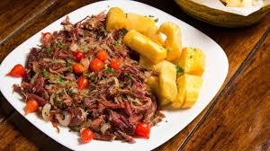

Um risoto cremoso preparado com arroz arbóreo, queijo artesanal e cogumelos frescos. Finalizado com um fio de azeite trufado e ervas da horta.
Serve: até 2 pessoas
Opções de proteína: camarão ou frango
Acompanhamento: salada verde ou batatas rústicas
Moqueca do Tabus
Peixe fresco cozido em leite de coco com pimentões coloridos e temperos secretos da casa. Sabor intenso e tradicional, servido com arroz branco soltinho.
Serve: até 4 pessoas
Opções de peixe: badejo ou dourado
Acompanhamento: pirão e farofa de dendê
Carne do Sertão Encantado
Carne de sol artesanal, grelhada na brasa e servida com purê de macaxeira. Um prato típico, com o toque especial da manteiga de garrafa.

Serve: até 2 pessoas
Molhos: alho tostado ou pimenta agridoce
Acompanhamento: feijão verde e vinagrete tropical
Sopa das Estrelas
Uma sopa leve e aromática feita com legumes frescos e especiarias, perfeita para aquecer e trazer conforto em qualquer estação.
Serve: até 3 pessoas
Opções de finalização: croutons ou queijo ralado
Acompanhamento: pão caseiro
Frango ao Sol Poente
Peito de frango grelhado com ervas aromáticas, servido com molho de laranja e gengibre. Um prato equilibrado entre o doce e o cítrico.
Serve: até 2 pessoas
Opções de molho: tradicional ou picante
Acompanhamento: arroz de castanhas ou legumes salteados
Doce Encanto
Uma sobremesa exclusiva: mousse de chocolate com calda de frutas vermelhas e toque de hortelã fresca. Finalização perfeita para a refeição.
Serve: até 2 pessoas
Opções de cobertura: chantilly ou raspas de chocolate